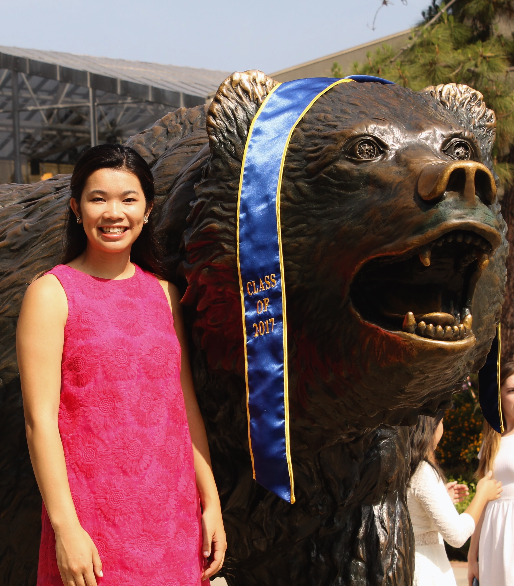

Ruth Dolly Johnson
Hi, I am a first-year Computer Science PhD student at the University of California, Los Angeles. I am interested in computational biology, specifically methods development.
>> Give a scroll to read more.
Hi, I am a first-year Computer Science PhD student at the University of California, Los Angeles. I am interested in computational biology, specifically methods development.
>> Give a scroll to read more.
 I'm orginally from Visalia, CA, and completed my bachelors in Mathematics of Computation at UCLA in 2017. Currently, I work with Eleazar Eskin and Bogdan Pasaniuc as a computer science PhD student at UCLA. This past summer, I participated in the Computational Genomics Summer Institute at UCLA.
[Sept 2017] Featured in UCLA Magazine's article, "A Minor Revolution", where I talk about my path to pursuing the Bioinformatics minor.
[July 2017] Gave a lightning talk at RECOMB-Genetics Satellite Meeting at UCLA discussing our fine-mapping visualization tool, CANVIS (Correlation Annotation VISualization).
[June 2017] Graduated with a B.S. in Mathematics of Computation from UCLA. Fun four years; go Bruins!
[May 2017] Received the Undergraduate Bioinformatics Research Award for my undergraduate research in the Bogdan Lab.
[May 2017] Recipient of the Chancellor's Service Award for leadership and service in the UCLA and Los Angeles community.
Improved methods for multi-trait fine
mapping of pleiotropic risk loci
Gleb Kichaev; Megan Roytman; Ruth Johnson; Eleazar Eskin; Sara; Lindström; Peter Kraft; Bogdan Pasaniuc; Bioinformatics 2016.
(abstract)
Motivation: Genome-wide association studies (GWAS) have identified thousands of regions in the
genome that contain genetic variants that increase risk for complex traits and diseases. However,
the variants uncovered in GWAS are typically not biologically causal, but rather, correlated to the
true causal variant through linkage disequilibrium (LD). To discern the true causal variant(s), a variety
of statistical fine-mapping methods have been proposed to prioritize variants for functional
validation.
Results: In this work we introduce a new approach, fastPAINTOR, that leverages evidence across
correlated traits, as well as functional annotation data, to improve fine-mapping accuracy at pleiotropic
risk loci. To improve computational efficiency, we describe an new importance sampling
scheme to perform model inference. First, we demonstrate in simulations that by leveraging functional
annotation data, fastPAINTOR increases fine-mapping resolution relative to existing methods.
Next, we show that jointly modeling pleiotropic risk regions improves fine-mapping resolution
compared to standard single trait and pleiotropic fine mapping strategies. We report a reduction in
the number of SNPs required for follow-up in order to capture 90% of the causal variants from 23
SNPs per locus using a single trait to 12 SNPs when fine-mapping two traits simultaneously.
Finally, we analyze summary association data from a large-scale GWAS of lipids and show that
these improvements are largely sustained in real data.
>> link to publication
CANVIS: Correlation Annotation VISualization
Ruth Johnson; Gleb Kichaev; Bogdan Pasaniuc
RECOMB-Genetics Satellite Meeting, July 2017. Los Angeles, CA, USA. Oral presentation.
Leveraging Functional Annotations in Fine-mapping of Causal Variants for Complex Traits
Ruth Johnson; Gleb Kichaev; Kathryn Burch; Bogdan Pasaniuc
UCLA Undergraduate Research Poster Day, May 2017. Los Angeles, CA, USA. Poster presentation.
Visualizing correlated causal variants
Ruth Johnson; Gleb Kichaev; Bogdan Pasaniuc
Annual meeting of the American Society of Human Genetics, October 2016. Vancouver, CN. Poster presentation.
SOHBRIT (Space Object Hyperspectral Bidirectional Reflectance Distribution Function Imaging Telescope)
Ruth Johnson; Connor Hitt; Nick Blazier
Sandia Summer Research Symposium, August 2016. Albuquerque, NM, USA. Poster presentation.
Here are some of my thoughts; you can read all of them on my Medium account. Additionally, I've done some programming tutorials through FruthieCodes, which can be found here.
This past weekend, I was grateful enough to attend Hack the Planet, a special Hackathon to mark the end of the MLH season. These events are becoming more and more popular, but I still have mixed feelings when it comes to Hackathons. This particular event was special ...
>>read more
Email: ruthjohnson at ucla dot edu
Github: ruthjohnson95
Twitter: @ruthie_johnson
LinkedIn: linkedin.com/in/ruthjohnson13/